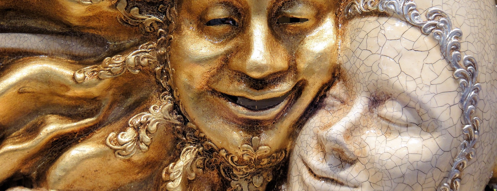
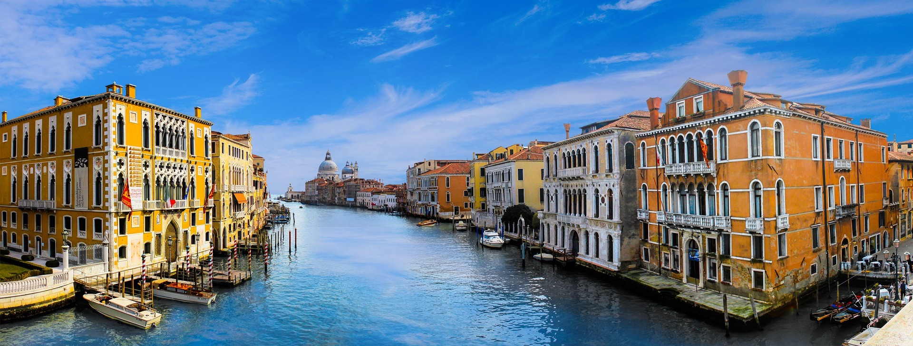
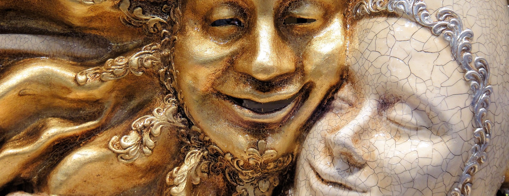
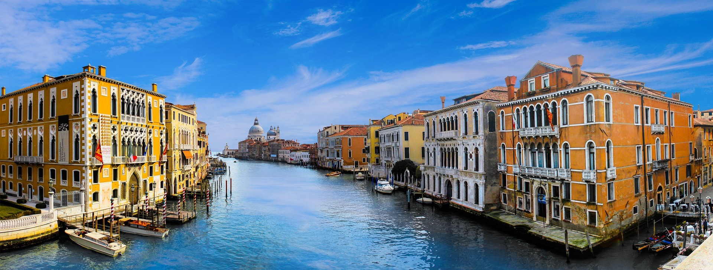

穿越中...
穿越中...
 千亿级像素全景图，鼠标旋转缩放
意大利-威尼斯
千亿级像素全景图，鼠标旋转缩放
意大利-威尼斯
 



Welcome to Venice, Italy
威尼斯，文艺复兴时期的重镇之一，一座建立在水上的城市。由118个小岛组成，并以177条水道、401座桥梁连成一体。威尼斯有“水上都市”、“百岛城”、“桥城”之称。这里有世界上最美的广场之一“圣马可广场”，有美丽的大运河，浴火重生的凤凰歌剧院，徐志摩笔下忧伤的叹息桥，美得令人窒息的回廊，这里是威尼斯画派的发源地，还是多部电影片段的拍摄地，音乐大师理查德·瓦格纳在这里与世长辞，她独特的无与伦比的气质让每一个到访的人都如痴如醉，不舍离去。
相传威尼斯的建造于公元453年。当时这个地方的农民和渔民为逃避游牧民族的杀掠，转而避往亚德里亚海中的这个小岛。他们合理利用肥沃的冲积土质，就地取材。在淤泥中、在水上，人们建起了威尼斯。
14世纪前后，威尼斯已经发展成为意大利最繁忙的港口城市，是整个地中海最著名的集商业、贸易、旅游于一身的水上都市；14～15世纪为威尼斯全盛时期，成为意大利最强大和最富有的海上“共和国”、地中海贸易中心之一。16世纪始，随着哥伦布发现美洲大陆，威尼斯逐渐衰落，1797年,威尼斯屈从于拿破仑的统治，有着一千多年历史的威尼斯共和国从此灭亡。1849年反奥地利的独立战争取得胜利。直到1866年威尼斯地区和意大利才实现统一。
现在生活在威尼斯的当地人只有老人及旅游业者，老人一般为退休工人, 平时会在咖啡吧和朋友聊天打牌，但是周末在外地工作的亲人会回家团聚，像中国人重视亲情一样。他们平时喜欢冬季到附近的山上滑雪泡温泉，夏天喜欢到海边享受阳光，另外一年一度的嘉年华(狂欢节)是威尼斯人引以为傲的活动，每年2月底人人都会参与。
由于众多河道，威尼斯水道是城市的马路，市内没有汽车和自行车，也没有交通指挥灯 ，取而代之的是独一无二的水上巴士和传统的代步工具贡多拉(Gondola，小船)。船是市内唯一的交通工具。除了小艇以外，所有交通工具都是明令禁止的。 乘坐贡多拉是在威尼斯最奢侈的一件事，可是这样的奢侈看起来光鲜，却要忍受不是很好闻的湖水味。

在16世纪期间，威尼斯成为欧洲最重要的音乐中心，以威尼斯乐派和作曲家创造出双重合唱风格，威尼是早期的音乐印刷中心，佩特鲁奇几乎在印刷技术出现后就开始出版音乐乐谱。而他的出版公司也吸引了全欧洲作曲家的目光，尤其是法国与法兰德斯。16世纪末，威尼斯逐渐发展得因音乐成就而闻名，例如安德烈·加布里埃利与乔凡尼·加布里埃利创造的大规模合唱与器乐。
在这一个世纪，威尼斯是欧洲的印刷业中心，也是德国以外第一座拥有印刷厂的城市，在1500年时拥有417间印刷业者。最重要的出版社是阿杜思·曼尼修斯的阿杜思出版社，在1499年出版的《寻爱绮梦》被认为是文艺复兴时期最美丽的著作之一，并确立现代的标点符号、页面版式及斜体的形式。他首次印刷则是亚里斯多德的作品。